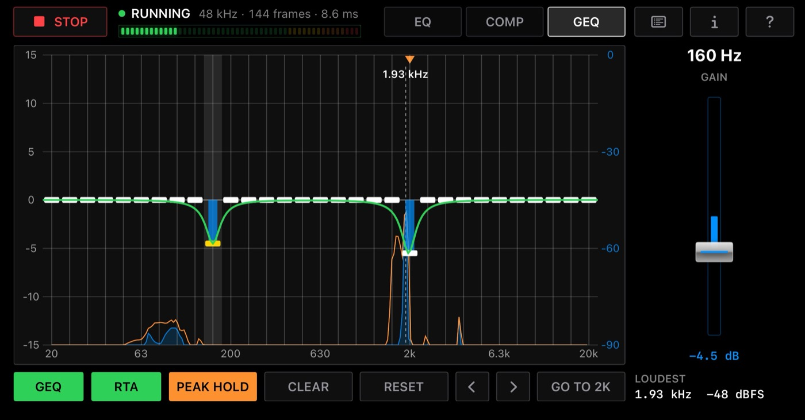
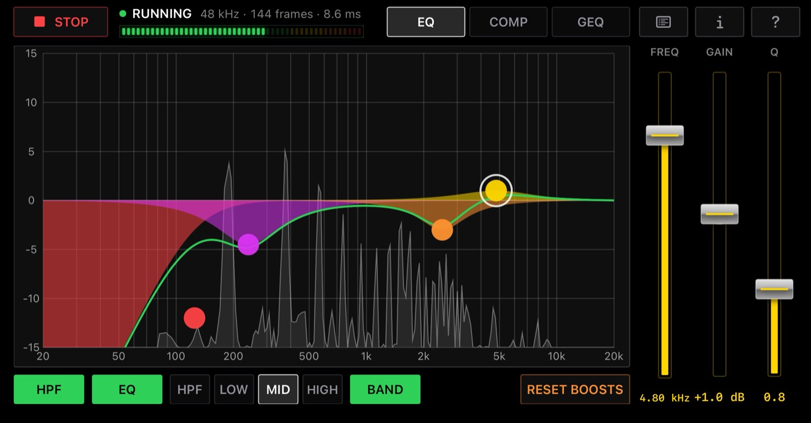
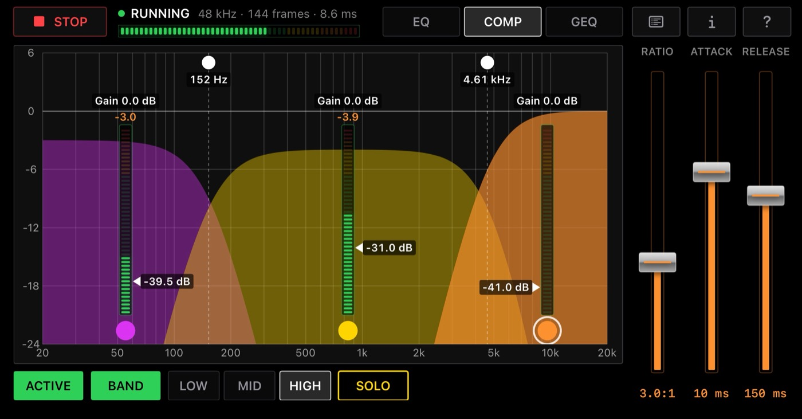

Mic Enhancer
A clear voice in any room. Put Mic Enhancer between the speaker's microphone and the PA, ring out the feedback, and get clean, even speech without carrying a rack.
Signal chain
One mono mic in, three stages, out to the PA. Each stage can be bypassed.
Screens
One landscape screen. Swipe or tap EQ, Comp and GEQ to move between them.



Features
Ring out the room
A 31-band, 1/3-octave graphic EQ drawn over a live analyser with peak hold. Feedback shows as a spike, and Go to selects the band nearest it.
Boosts you can't miss
Boosted bands turn orange, so a boost left in after ringing out is easy to spot. Reset boosts clears them and keeps your cuts.
Channel EQ
A high-pass filter for rumble and handling noise, plus three parametric bands. Drag dots on the curve, pinch for width, or set exact values on the faders.
3-band compressor
Even out a speaker who moves on and off the mic. Set threshold and makeup gain on the graph, and ratio, attack and release on the faders. Solo a band to hear it alone.
Presets
Save a preset for each venue or speaker. Your current settings are kept when the app closes, even if you never save a preset.
Low latency
See the sample rate, buffer and round-trip latency at all times. The graphic EQ adds no delay of its own.
Touch you can trust
Controls need a short press-and-hold before they move, so a quick swipe never changes anything by accident.
Matches Track Mixer
The same black, stage-ready design as Track Mixer: easy to read in a dark room.
What you need
| Device | iPhone or iPad with iOS / iPadOS 27 or later |
|---|---|
| Interface | A class-compliant USB audio interface with a mic input, e.g. a two-channel desktop interface. Its output goes to the PA or desk. |
| Mic | Any microphone your interface supports (dynamic, condenser or lavalier receiver). |